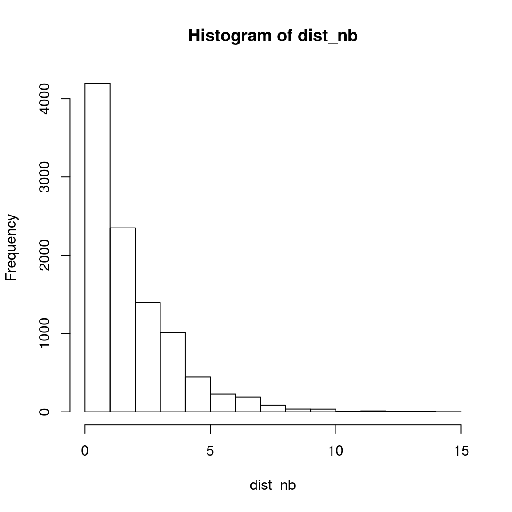
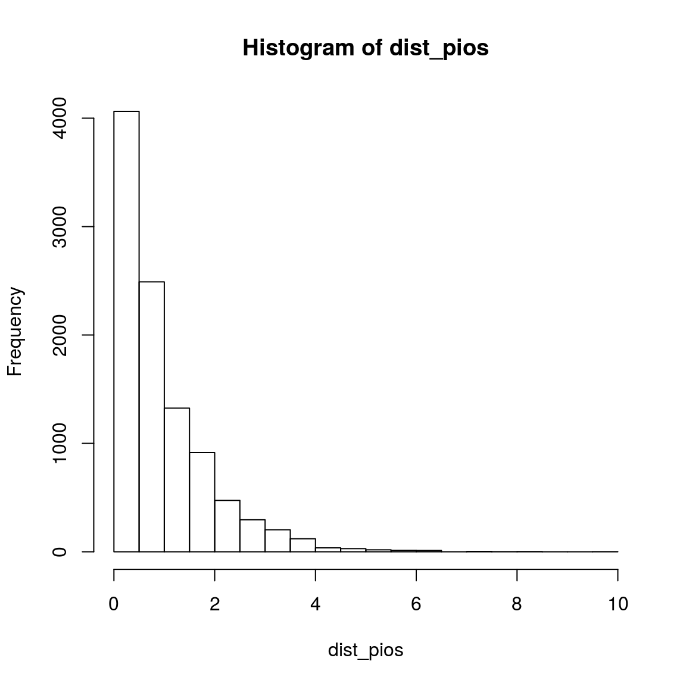

10 The rationale for using negative binomial distribution to model read count in RNA-seq data
Several tools for DEG detection (including DESeq2 and eageR) model read counts as a negative binomial (NB) distribution.
The nagative binomial distribtion, especitally in its alternative parameterization, can be used as an alternative to the Poisson distribution. It is espectially useful for discrete data over an unbounded positive range whose sample variance exceeds the sample mean. In such cases, the observations are overdispersed with respect to a Poisson distribution, for which the mean is equal to the variance. Hence a Poison distribution is not an appropriate model. Since the negative binomial distribution has one more parameter than the Poisson distribution, the second parameter can be used to adjust the variance independently of the mean.
Discrete data over an unbounded positive range is one way of saying ‘integer counts’.
The negative binomial distribution also arises as a continuous mixture of Poisson distributions (i.e. a compound probability distribution) where the mixing distribution of the Poisson rate is a gamma distribution." The other important bit of information to know is that read counts for a sample in theory follow a Binomial(n,p) distribution, where n is the total number of reads and p is the probability of a read mapping to a specific gene. However, the binomial distribution is computationally inconvenient, since it involves computing factorials, and with millions of reads in each sample, the Poisson distribution (with lambda = n*p) is an excellent approximation to the Binomial while being far more mathematically tractable. So the Poisson noise quantifies the counting uncertainty, while the gamma distribution quantifies the variation in gene expression between replicates. The mixture of the two yields the negative binomial. See also section 2 of http://www.statsci.org/smyth/pubs/edgeRChapterPreprint.pdf

If differential expresssion detection is our goal, we need to keep in mind that we model the distribution of counts for a given gene across replicates; we don’t model the dsitrution of an individual samples. So for DE detection, we are not concerned with shape of distribution of counts or the whole organisms at all. Poisson is a single parameter dist’n, with mean=variance. That assumption, which is really an approximation to the binomial, is suitable only for the variability associated with sampling the same DNA population (e.g. if you sequence multiple lanes of the same DNA, and assume no lane-specific effects, etc.). But if there is variation between your replicates (e.g. lab mice, people, etc.), the Poisson assumption will tend to underestimate the variance and any differences you observe (e.g. testing the null hypothesis that two groups have the same mean expression) will be overstated. This explaination is from the co-author of edgeR (https://www.biostars.org/p/6028/).
10.1 Negative binomial in R
set.seed(100)
# 1) n: number of number of observations.
# 2) size: target for number of successful trials, or dispersion parameter (the shape parameter of the gamma mixing distribution). Must be strictly positive, need not be integer.
# 3) prob: probability of success in each trial. 0 < prob <= 1.
obs_nb <- rnbinom(100000, 5, 0.5)
obs_pios <- rpois(10000, mean(obs_nb))
table(obs_nb)## obs_nb
## 0 1 2 3 4 5 6 7 8 9 10 11
## 3039 7651 11590 13833 13598 12468 10303 8098 6055 4377 3094 2078
## 12 13 14 15 16 17 18 19 20 21 22 23
## 1329 956 583 364 224 150 77 50 37 22 7 7
## 24 25 27 28 29
## 5 1 2 1 1table(obs_pios)## obs_pios
## 0 1 2 3 4 5 6 7 8 9 10 11 12 13 14
## 65 360 833 1434 1696 1706 1433 1096 672 388 170 86 45 9 6
## 15
## 1hist(obs_nb, breaks = 1000)
hist(obs_pios, breaks = 1000)var(obs_nb)## [1] 9.949713var(obs_pios)## [1] 5.11018Here we can clearly see that the variance (measure of variation.) in the simulated data with Poisson distribution () is higher than that with negative binomial distribtuon.
n = 10000
dist_nb = rep(NA, n)
for(i in 1:n){
obs_nb_tem <- rnbinom(3, 5, 0.5)
dist_nb[i] = var(obs_nb_tem)/mean(obs_nb_tem)
}
hist(dist_nb)
n = 10000
dist_pios = rep(NA, n)
for(i in 1:n){
obs_pois_tem <- rpois(3, 5)
dist_pios[i] = var(obs_pois_tem)/mean(obs_pois_tem)
}
hist(dist_pios)
hist(dist_nb - dist_pios, breaks=100, col = "lightblue", border = NA)
abline(v=0, col="red", lty="dashed")10.1.1 Real data
read_count = read.table("data/yeast_EV_DNMT3B_count.tab", sep="\t", head=T)
read_count_sub = read_count[, c(4:6)]
head(read_count_sub)## DNMT3B_2 DNMT3B_3 DNMT3B_4
## 1 717 948 1039
## 2 392 386 403
## 3 0 0 1
## 4 106 55 33
## 5 477 418 366
## 6 285 187 138mean_var_diff <- apply(read_count_sub, 1, var) - apply(read_count_sub, 1, mean)
summary(mean_var_diff)## Min. 1st Qu. Median Mean 3rd Qu. Max.
## -6078 1 623 1058496 5794 2026890302hist(mean_var_diff,breaks=100000,xlim=c(-50000,100000))
10.2 Reference
What’s the rationale for using the negative binomial distribution to model read: https://support.bioconductor.org/p/84832/
Why do we use the negative binomial distribution for analysing RNAseq data?: http://bridgeslab.sph.umich.edu/posts/why-do-we-use-the-negative-binomial-distribution-for-rnaseq
R统计学(06): 负二项分布: https://mp.weixin.qq.com/s/QBkL8_cW6Lsm5U56SUmUoQ
10.3 Batch effect
Batch effects are sub-groups of measurements that have qualitatively different behaviour across conditions and are unrelated to the biological or scientific variables in a study. For example, batch effects may occur if a subset of experiments was run on Monday and another set on Tuesday, if two technicians were responsible for different subsets of the experiments or if two different lots of reagents, chips or instruments were used. These effects are not exclusive to high-throughput biology and genomics research1, and batch effects also affect low-dimensional molecular measurements, such as northern blots and quantitative PCR.
batch effects occur because measurements are affected by laboratory conditions, reagent lots and personnel differences.
1.1 Data simulation We downloaded an RNA-seq dataset from online for Zebrafish. This is a standard count data from RNA-seq experiment. These data are available as part of the zebrafishRNASeq Bioconductor package. (https://bioconductor.org/packages/release/data/experiment/html/zebrafishRNASeq.html) We first filter low expressed genes and only keep genes with more than 5 counts in at least two samples, and then check the dispersion of counts data by plotting the variance against the mean of the zebrafish dataset. Based on the higher dispersion usually existing in count data, we assume a zero inflated negative binomial distribution and estimate the parameters from the zebrafish data. We then use the R package of “ polyester” [24] to simulate 2 RNA-seq datasets by using the same dispersion parameters (mean and variance) from the zebrafish dataset, thus to mimic the real situation in a common RNA-seq experiment.
For the data simulation step, we simulate 10, 000 genes on 20 samples. These 20 samples are simulated on 2 batches, with 5 cases and 5 controls on each batch. So there will be 2 kinds of factors on each of the 10, 000 genes: group factor (case/control status) and batch factor (batch 1/2). The DEGs detected could be caused by either of these 2 factors.
For dataset 1, we simulate the group factor (case/control) on 0 gene (i.e., 0 gene will be detected as differentially expressed due to case/control status), and batch factor on 10, 000 genes (i.e., if any of these 10, 000 genes are detected as differentially expressed, that will only be caused by batch factor, not by sample phenotype of case/control status). In this case, the DEGs will be false positive signals because of the existence of batch effect and absence of case/control difference.
In second case, we generate a dataset 2 with random batch effects on case and control samples (i.e., the phenotype factors are not balanced between case and control samples in each batch and batch factor have different impact on case samples and control samples). For the genes, the group factors (case and control) are simulated on 3000 genes and batch factors are simulated on 5000 genes using R package of “ polyester” respectively. Finally, among all the 10, 000 genes, 1000 genes are with group factor only, 2000 genes are with both group and batch factors, 3000 genes are with batch factor only, and the rest 4000 genes have either group factor or batch factor. The 3000 genes with batch factor only are defined as control genes, so that we can test the impact of batch effects and the performance of each method in removing batch effects).
10.4 Reference
Simulation of batch effect data: https://www.biorxiv.org/content/biorxiv/suppl/2017/12/15/234344.DC1/234344-1.pdf
Evaluation of Methods in Removing Batch Effects on RNA-seq Data: http://www.tran-med.com/article/2016/2411-2917-2-1-3.html#outline_anchor_4